Redrawn from the Journey Academy originals
These are drafts. The Kimurodex still shows the old art. Approve, ask for changes, or keep the old one, then press Export my decisions and paste the text to Claude. (Not in the menu and hidden from search engines, but anyone with the address can open it.)
Pavkit / Pavinox / Pavenaxis
נאמן למקור ב-JA (צורה, צבעים, תנוחה)
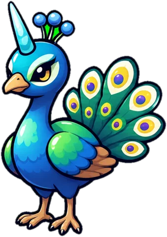


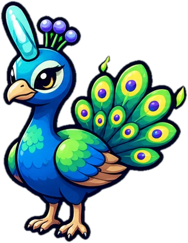
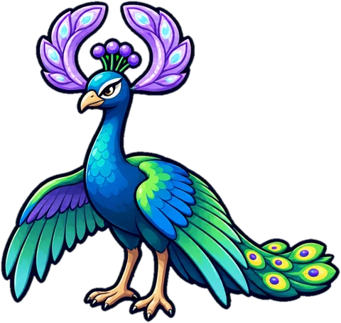
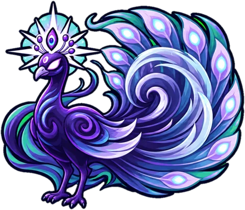
Embkit / Embolt / Embryxal
נאמן למקור ב-JA (צורה, צבעים, תנוחה)


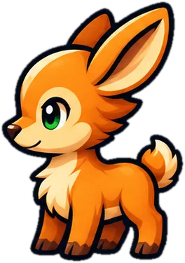
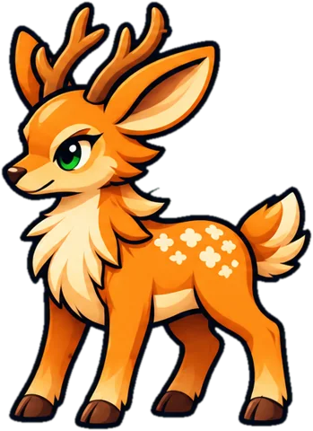
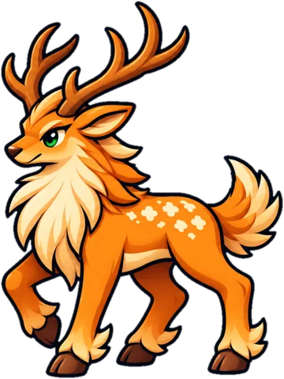
Sporbin / Fungling / Arborveil
בשלב 3 יש עכשיו ידיים


Sproutling / Bramlock / Verdanthos
הירוק חזר לגוף


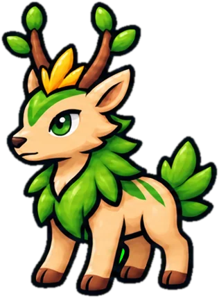
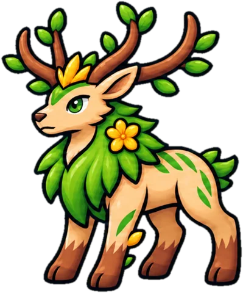
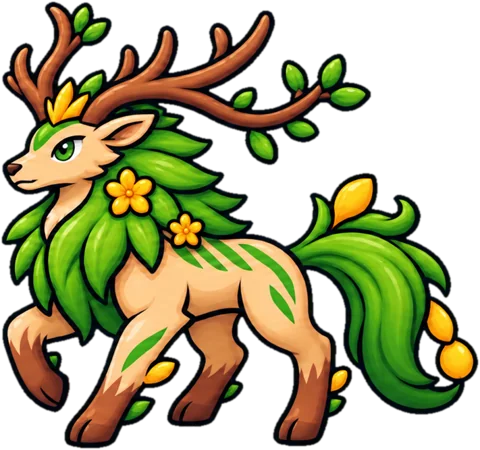
Sparkmouse / Voltail / Thunderwing
שלבים 2 ו-3 קשורים לשלב 1


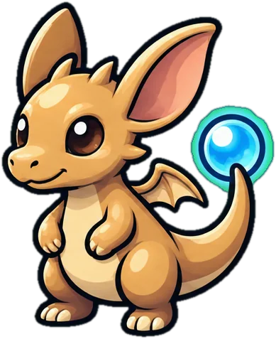
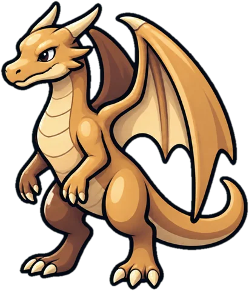
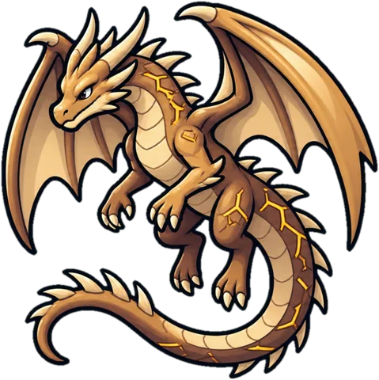
Teryx / Teraxon / Terrakalos
נאמן למקור ב-JA (צורה, צבעים, תנוחה)


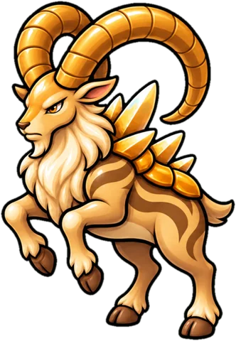
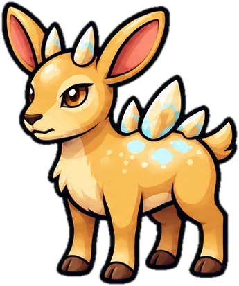
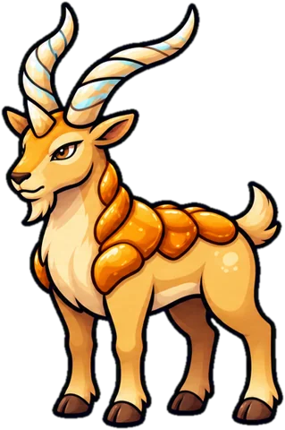
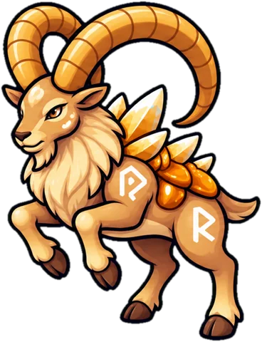
Tigrkit / Tigrawn / Tigracron
נאמן למקור ב-JA (צורה, צבעים, תנוחה)


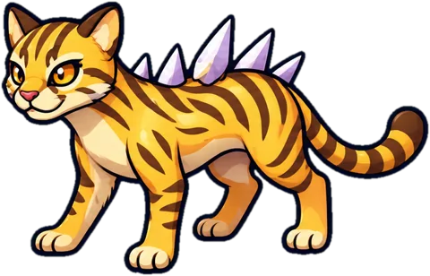
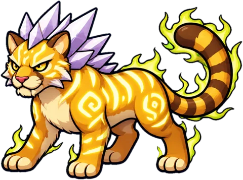
Psibab / Psihowl / Psikanth
נאמן למקור ב-JA (צורה, צבעים, תנוחה)


Lynxkit / Lynxorn / Infernlynx
נאמן למקור ב-JA (צורה, צבעים, תנוחה)


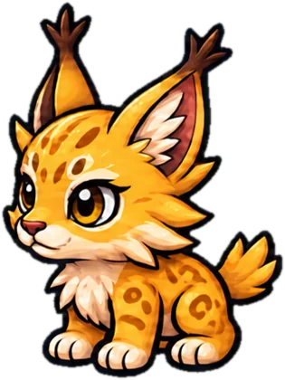
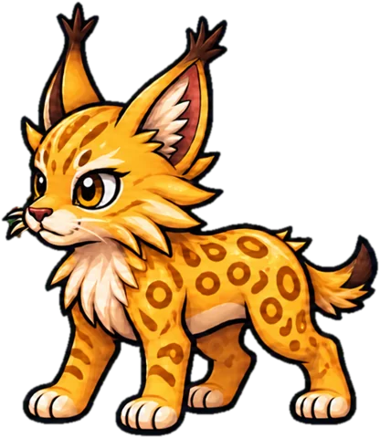
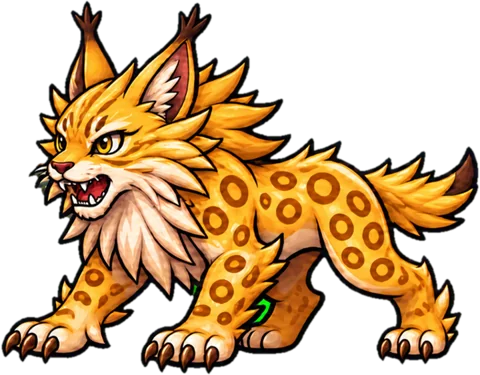
Virkling / Viridaunt / Virantheon
נאמן למקור ב-JA (צורה, צבעים, תנוחה)


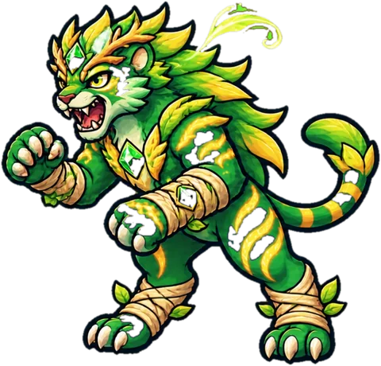
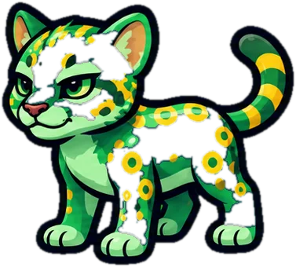
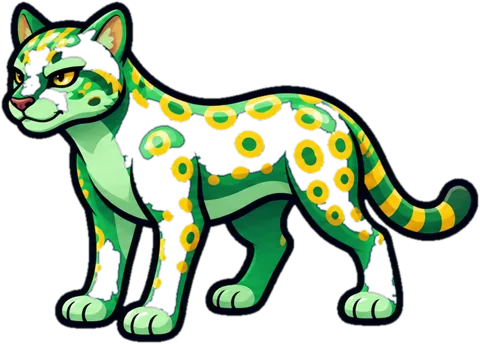
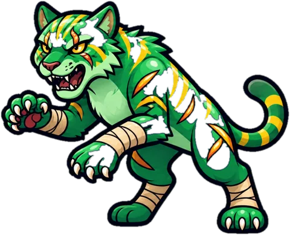
Frostpip / Glacier / Ethereowl
נאמן למקור ב-JA (צורה, צבעים, תנוחה)

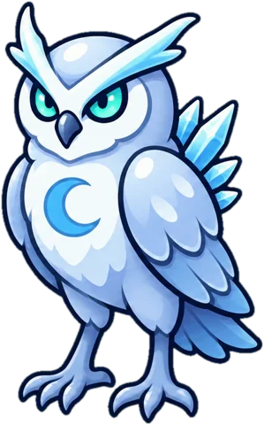
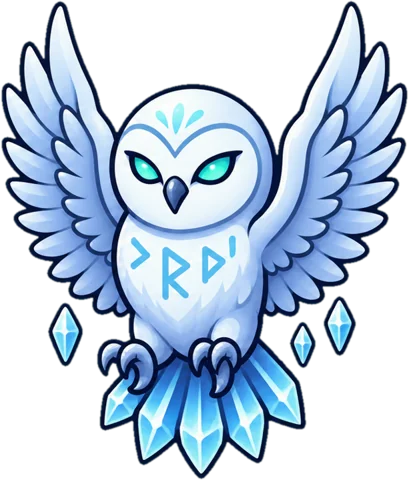
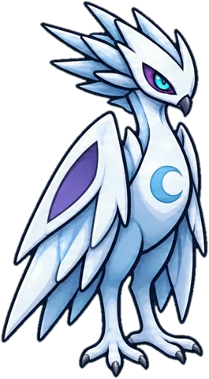
Cygnlet / Cygnaura / Cygnalor
נאמן למקור ב-JA (צורה, צבעים, תנוחה)


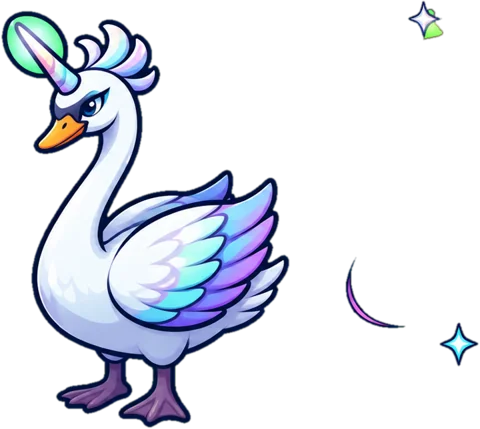
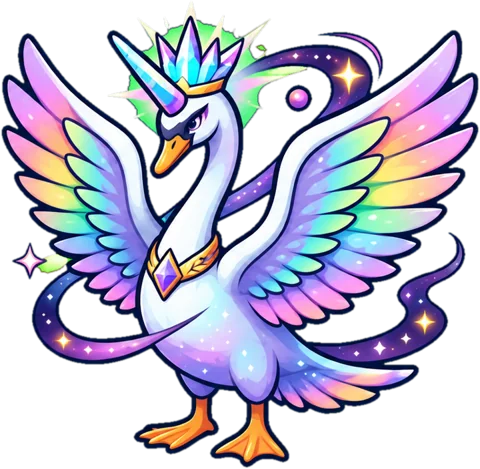
Flambat / Pyrewing / Pyrebat
נאמן למקור ב-JA (צורה, צבעים, תנוחה)

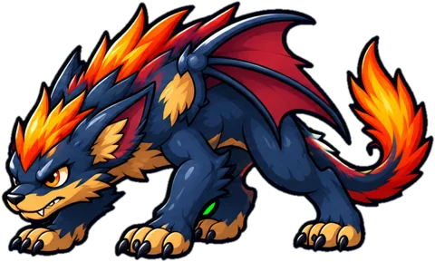
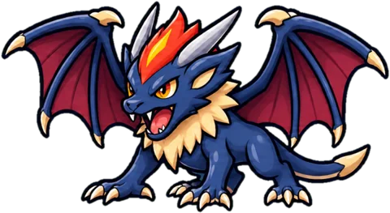
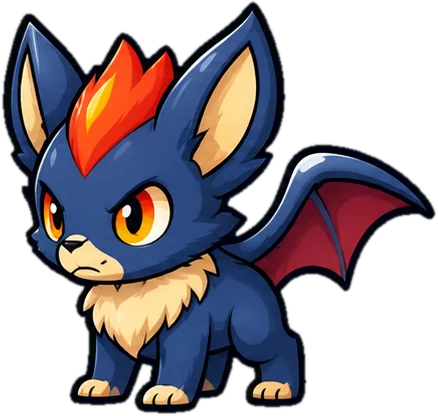

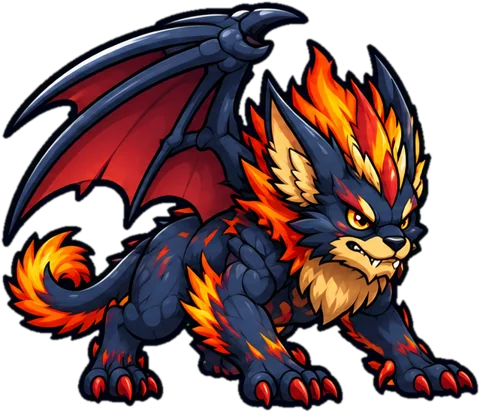
Sparkitt / Strikat / Thunderfang
נאמן למקור ב-JA (צורה, צבעים, תנוחה)


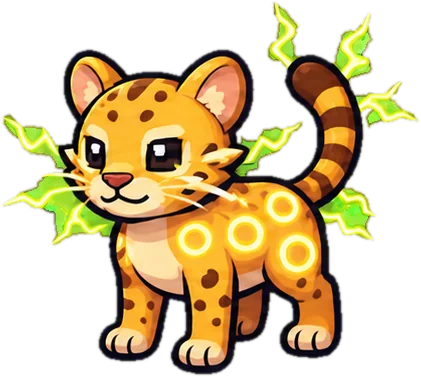
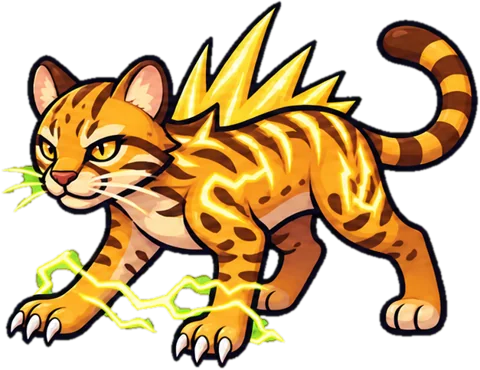
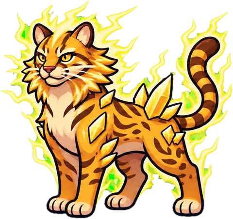
Coralite / Coraleon / Coralarch
נאמן למקור ב-JA (צורה, צבעים, תנוחה)


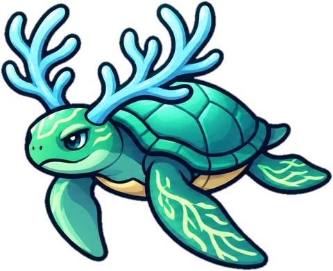
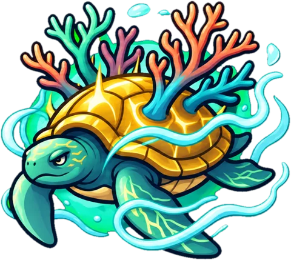
Manteel / Manteelid / Celestmantis
נאמן למקור ב-JA (צורה, צבעים, תנוחה)

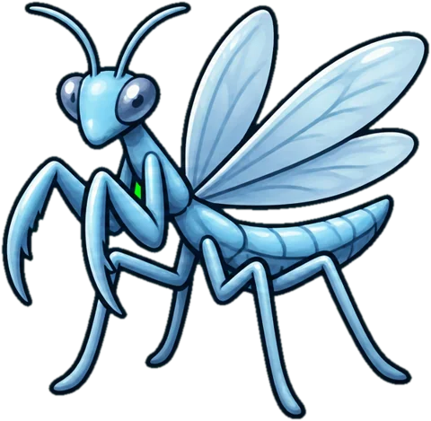

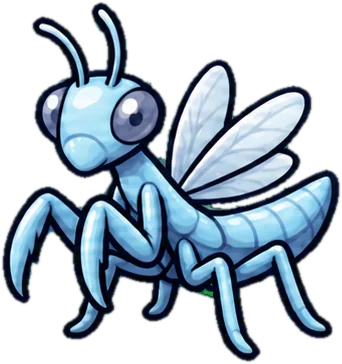
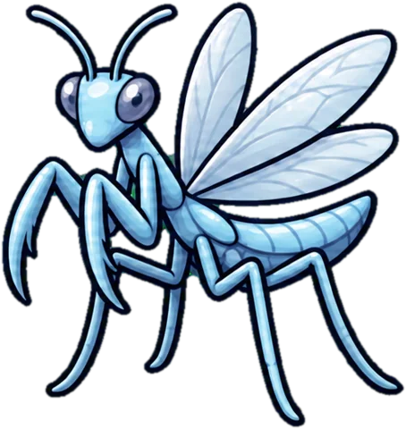
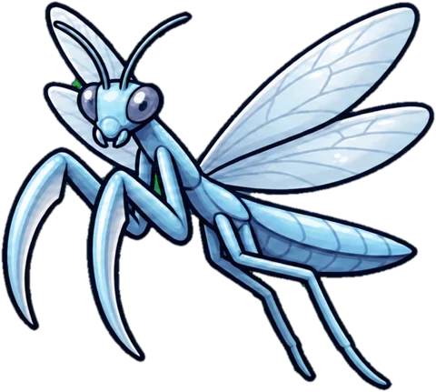
Miaskit / Miasmole / Miasmorph
נאמן למקור ב-JA (צורה, צבעים, תנוחה)


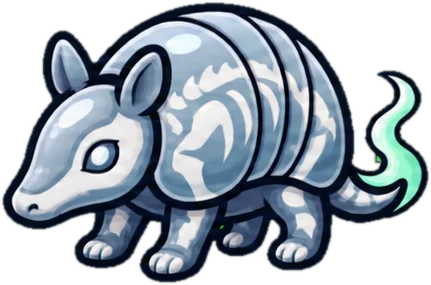
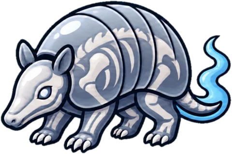
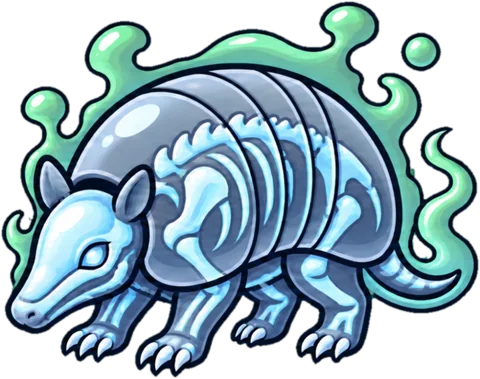
Spinule / Spinara / Spinamorph
נאמן למקור ב-JA (צורה, צבעים, תנוחה)


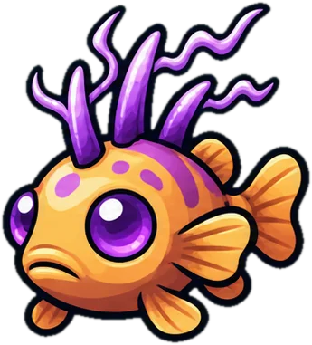
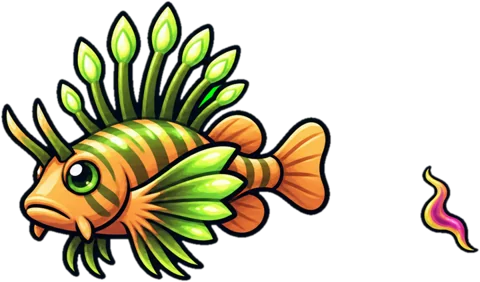
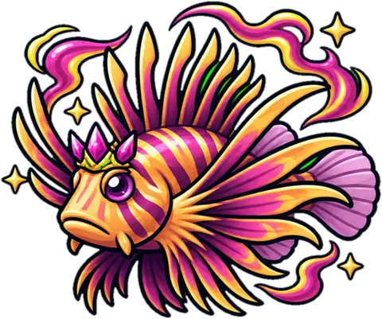
Octryke / Octrapus / Octyrax
נאמן למקור ב-JA (צורה, צבעים, תנוחה)

Noctix / Noctilix / Noctivex
נאמן למקור ב-JA (צורה, צבעים, תנוחה)


Pigmole / Groundtusk / Terravorn
בלי אפקט האדמה


Grimlet / Magrum / Infermagrim
נאמן למקור ב-JA (צורה, צבעים, תנוחה)


Sparkraven / Inferryx / Phoenixolt
נאמן למקור ב-JA (צורה, צבעים, תנוחה)


Frondlet / Frondarch / Frondyrant
נאמן למקור ב-JA (צורה, צבעים, תנוחה)


Tinwhyx / Spirwhyx / Maelwyx
נאמן למקור ב-JA (צורה, צבעים, תנוחה)


Gemurp / Gemurite / Crystallion
נאמן למקור ב-JA (צורה, צבעים, תנוחה)


Crystkit / Crystrail / Crystalleigh
נאמן למקור ב-JA (צורה, צבעים, תנוחה)


Scorcule / Scorvenom / Infermarx
נאמן למקור ב-JA (צורה, צבעים, תנוחה)


Sproutym / Windserpent / Vinewyrm
הירוק חזר לגוף


Owlite / Twilight / Celestowl
נאמן למקור ב-JA (צורה, צבעים, תנוחה)


Glacix / Frostmane / Cryofang
נאמן למקור ב-JA (צורה, צבעים, תנוחה)


Aurkit / Aurfang / Aurmawlix
נאמן למקור ב-JA (צורה, צבעים, תנוחה)


Frosicalf / Frostaur / Glacihorn
קונספט חדש: יעל קרח (כי כבר יש לנו עגל קרח)


Woolusk / Mammoxen / Primammoth
שלב 1 נשאר; שלבים 2 ו-3 הם התפתחות טבעית שלו


Pebblump / Boulderant / Titanusk
אותו עיצוב, בלי אפקט החול


Frostcalf / Tundhorn / Boralord
בלי הקרן הכחולה בשלב 1 ובלי אפקט הקרח בשלב 3


Zephchick / Zephawk / Zephyrian
בלי ההילה בשלב 1


Luxling / Luxdrake / Luxwyrm (the winged Journey Academy form)
הגרסה המקורית מ-JA: דרקון זהב דו-רגלי עם כנפיים. תיווסף לצד גרסת הנחש (שני סוגים).